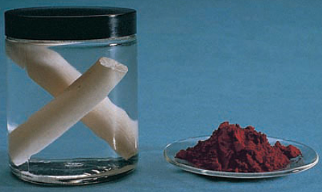
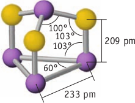
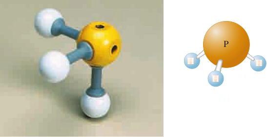

Phosphorus
Elemental phosphorus was first derived from human waste. In 1699, The Germanal alchemist Hennig Brand, was in search of the philosopher’s stone, the magic elixir that would turn the crudest substance into gold. Brandt was experimenting with urine, which had served as the source of useful chemicals since Roman times. It is not surprising that phosphorus could be extracted from this source. Humans consume much more phosphorus, in the form of phosphate, than they require, and theexcess phosphorus (about 1.4 g per day) is excreted in the urine. Brandt heated dried urine with sand and when it passed the resulting vapors through water, the was able to isolate the form of elemental phoshorous known as white phosphorus (contains P4 molecules). The name phosphorus us derived from the Latin phos, meaning light, and phorus, meaning bearing. It seems that when Brand stored the solid white phosphorus in a sealed bottle, it glowed in the dark. This effect, a glow that persists even after the light source has been removed came to be called phosphorescence. Interestingly, the term phosphorescence is derived from the name of an element that really does not phosphorescence. The glow that Brand saw actually was the result of a reaction of oxygen from the air on the surface of white phosphorus. If isolated completely from air, phosphorus does not glow in the dark after being irradiated.
It is nonetheless extraordinary that Brandt was able to isolate the element. According to an 18th-century chemistry book, about 30 g of phosphorus could be obtained from 60 gallons of urine. And the process was not simple. Another 18th-century recipe states that “50 or 60 pails full” of urine was to be used. “Let it lie steeping...till it putrefy and breedworms. ”The chemist was then to reduce the whole to a paste and finally to heat the paste very strongly in a retort. After somedays, phosphorus distilled from the mixture and was collected in water. (We know now that carbon from the organic compounds in the urine would have reduced the phosphate to phosphorus.)
Allotropes of Phosphorus
Phosphorus has two common allotropes: white phosphorus and red phosphorus.
White phosphorus, a waxy, white solid, is very poisonous and very reactive. If white phosphorus is left exposed to air, it bursts spontaneously into flame. Because of its reactivity with oxygen, white phosphorus is stored under water, in which it is insoluble. As you might expect from its low melting point (44°C), white phosphorus is a molecular solid, with the formula P4, rather than N2 as its second-period relative. The phosphorus atoms in the P4 molecule are arranged at the corners of a regular tetrahedron such that each atom is single-bonded to the other three (Figure 21.47). The experimentally determined P−P−P bond angle is 60°. Because this is considerably smaller than the normal bond angle, the bonding in P4 is strained and therefore weaker. This accounts for the reactivity seen in this phosphorus allotrope; chemical reactions of P4 replace its weak bonds by stronger ones.
White phosphorus was made using urine for more than 100 years. But it is now produced by the reduction of phosphate minerals in an electric furnace by heating phosphate rock with coke (C) and quartz sand (SiO2) in an electric furnace
2 Ca3 (PO4)2 (s) + 10 C(s) + 6 SiO2 (s) → P4 (g) + 6 CaSiO3 (s) + 10 CO(g)
The phosphorus vapor can then be cooled under water, preventing its spontaneous combustion, and eventually yielding the solid forms of phosphorus present at room temperature. The other product, calcium silicate glass (called slag), is drained periodically from the bottom of the furnace. The carbon monoxide gas is used as a fuel. Most of the white phosphorus produced is used to manufacture phosphoric acid, H3PO4. Some white phosphorus is converted to red phosphorus, which has a chain structure (Figure 21.48). Red phosphorus is much less reactive than white phosphorus and can be stored in the presence of air. This phosphorus allotrope is relatively nontoxic and is used in the striking surface for safety matches. Waxy white phosphorus is the most common allotrope of phosphorus, but paradoxically it is the least stable thermodynamically.
By heating up white phosphorus at 300 °C its allotropic form, red phosphorus is obtained. Red phosphorus is a polymer of P4 units.
Phosphorus Oxides
Phosphorus has two common oxides, tetraphosphorus hexoxide, P4O6, and tetraphosphorus decoxide, P4O10. Their common names are phosphorus trioxide and phosphorus pentoxide, respectively. The names are at odds with present rules of nomenclature but stem from their empirical formulas, P2O3 and P2O5.
If P4 is carefully oxidized, P4O6 is formed; an O atom has been placed into each P—P bond in the tetrahedron. The most common and important phosphorus oxide is P4O10, a fine white powder commonly called phosphorus pentaoxide because its empirical formula is P2O5. In P4O10, each phosphorus atom is surrounded tetrahedrally by O atoms.
|
|
O2 ⟶ |
|
O2 ⟶ |
|
| ↓H2O | ↓H2O | |||
|
|
|
Phosphorus also forms a series of compounds with sulfur. Of these, the most important is P4S3. In this phosphorus sulfide, S atoms are placed into only three of the P−P bonds. The principal use of P4S3 is in “strike anywhere” matches, the kind that light when you rub the head against a rough object. The active ingredients are P4S3 and the powerful oxidizing agent potassium chlorate, KClO3. The “safety match” is now more common than the “strike anywhere” match. In safety matches, the head is predominantly KClO3, and the material on the match book is red phosphorus (about 50%), Sb2S3, Fe2O3, and glue.
| 4 P(s, red allotrope) | + | 3/8 S8 (s) | ⟶ |  P4S3 |
Enormous quantities of phosphorus compounds are used around the world, and most of this begins with phosphate rock, which is largely Ca3(PO4)2 or apatite. Phosphate rock is converted to impure phosphoric acid and then to other products, or to elemental phosphorus, from which pure acid and other products are made.
Phosphoric acids
There are three types of phosphoric acids, ortho, pyro and meta phosphoric acids and they are prepared by hydratation of P2O5
P2O5 + H2O → 2HPO3 (metaphosphoric acid)
P2O5 + 2H2O → 2H4P2O7 (pyrophosphoric acid)
P2O5 + 3H2O → 2H3P2O4 (ortho phosphoric acid)
Ortho phosphoric acid is commonly known as phosphoric acid.
PH3, Phosphine
Phosphine, PH3, bp = −87.5 °C, mp = − 134 °C, ρ= 1.529 g/L at 0°C, 760 mm.
Phosphide salts react vigorously with water to produce phosphine (PH3), a toxic, colorless gas:
2Na3P (s) + 6H2O(l) ⟶ 2PH3 (g) + 6Na+ (aq) + 6OH2 (aq)
Phosphine is analogous to ammonia, although it is a much weaker base (Kb ≃ 10−26), which suggests that the lone pair on PH3 is not available to interact with a proton fo form PH4+. These observations can be explained assuming that hybridization is not occuring in PH3: the lone pair is in the 3s orbital, while the electron involved in forming the P−H bonds are simply those in the unhybridized 3p orbitals. In the case of N atom, the sp3 hybrid orbitals are not too much larger that the hydrogen 1s orbital for the overlap to be effective in producing stronger bonds. For the large atoms, the p orbitals are already larger than the H 1s orbital and increasing their size by making sp3 hybrid decreases the effectiveness of overlap. Therefore, stronger bonds form with the esentially unhybridized p orbital on the central atom and the bond angles are close to 90° (expected if P is using pure p orbitals); So PH3 has a pyramidal molecular structure, as we would predict from the VSEPR model but the xperimental measurements show that the H–P–H bond angle in phosphine is 93.8°, much closer to 90° than to a tetrahedral angle of 109.5°.
It is also much less soluble in water: H is slightly more electronegative than N. The absence of hydrogen bonding explains why PH3 has a lower boiling point than ammonia inspite of the fact that it is a heavier molecule. It is a poisonous, highly reactive gas with a faint garlic-like odor. Industrially, it is made by the reaction of white phosphorus and aqueous NaOH.
P4(s) + 3KOH (aq) + 3H2O(l) → PH3(g) + 3KH2PO2(aq)
or by heating calcium phoshide with water
CaP2(s) + 6H2O(l) → 3Ca(OH)2(aq) + 2PH3(g)
The gas is collected over water.